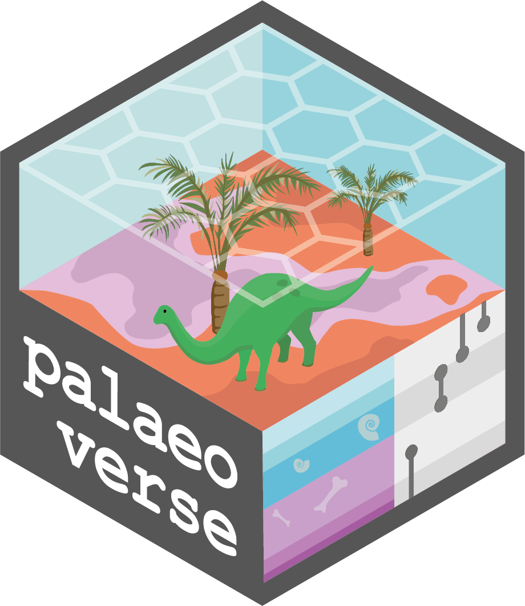

install.packages("dplyr", "palaeoverse", "ggplot2", "deeptime", "sf",
"rnaturalearth", "rphylopic", "terra", "tidyterra",
"rpaleoclim", "rgplates")NAPC 2024 Workshop
R for Paleobiologists: Getting started with the palaeoverse R package (and more!)
08:00–12:00 - 19th June 2024
Room 1010, Biological Sciences Building, 1105 North University Avenue, Ann Arbor, MI 48109-1085
Welcome
Welcome to the second edition of R for Palaeobiologists: Workshop. R is one of the most popular languages in the world of Data Science and has been widely adopted by the palaeobiological community to clean, analyse and plot data. General familiarity with R allows users to expand the potential of their research and automate routine tasks. Importantly, it allows researchers to improve the reproducibility of their research and document their analyses. This workshop will introduce you to palaeoverse, an R package which supports data preparation and exploration for palaeobiological analysis, improving code reproducibility and accessibility. The event will also introduce databases (e.g. Paleobiology Database) and building workflows in R (e.g. data cleaning) using palaeoverse. Additional packages will also be introduced along with the versatility R has to offer.
Arrival
The event starts at 08:00 on the 19th June 2024 and will take place in Room 1010, Biological Sciences Building, 1105 North University Avenue, Ann Arbor, MI 48109-1085.
The full schedule for the workshop is available here.
Installation
Please ensure that you have the latest version of R for the workshop, which can be downloaded here. We also recommend installing the latest version of RStudio, which can be downloaded here. To minimize any installation issues during the workshop, please also install the following R packages:
Acknowledgements
This event is run by the Palaeoverse development team and supported by the organizers of the 12th North American Paleontological Convention. We thank the organizers for their support in facilitating this workshop.
